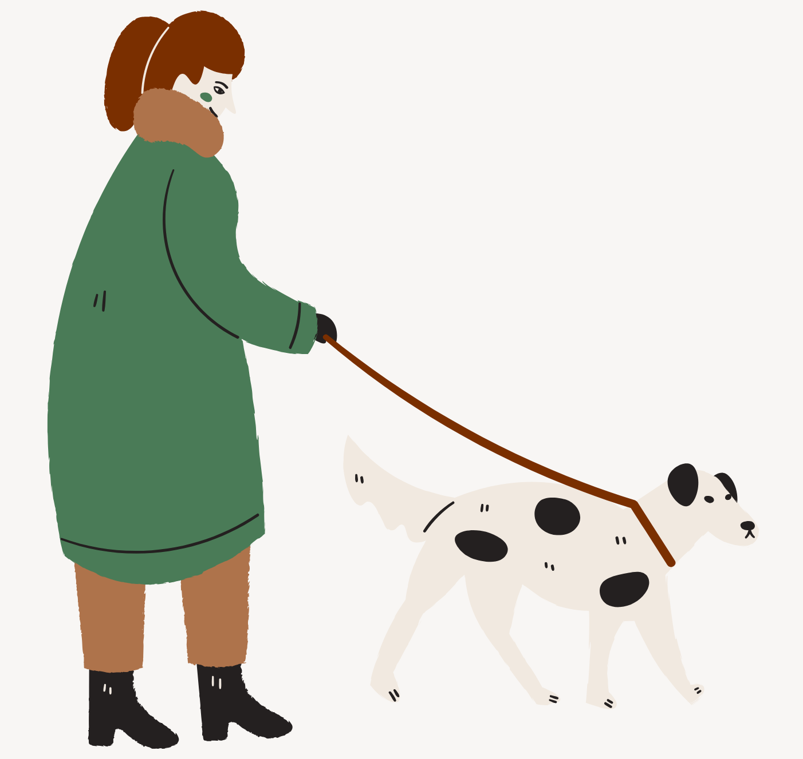
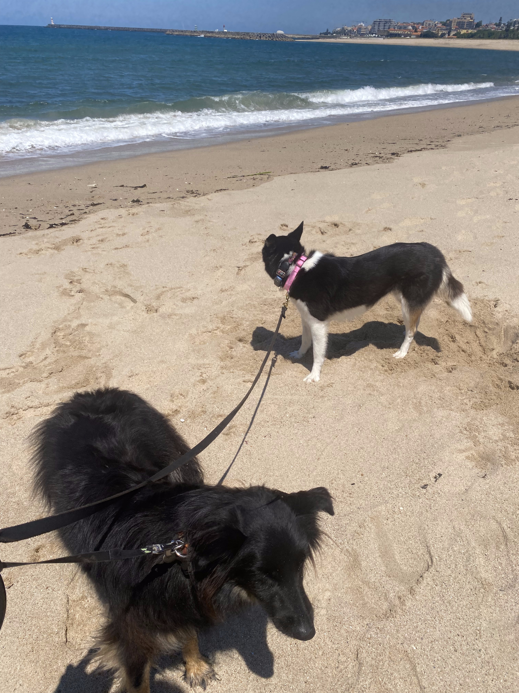
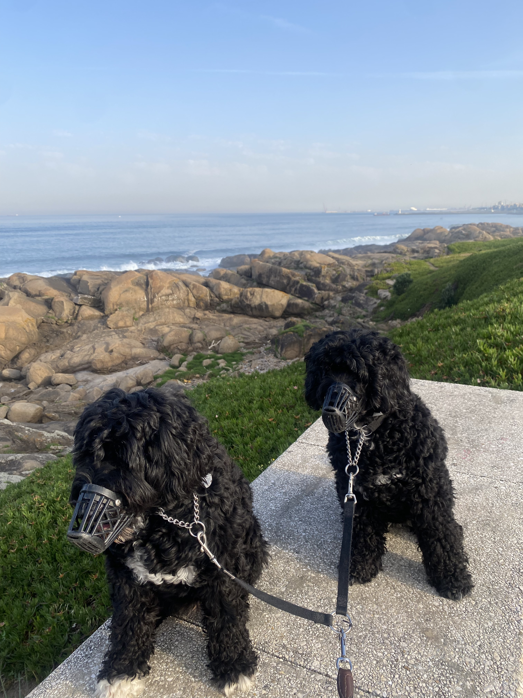
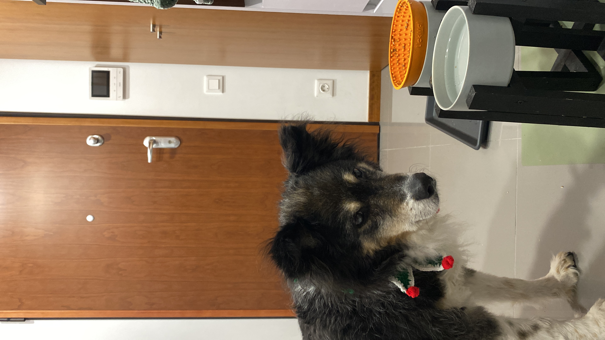
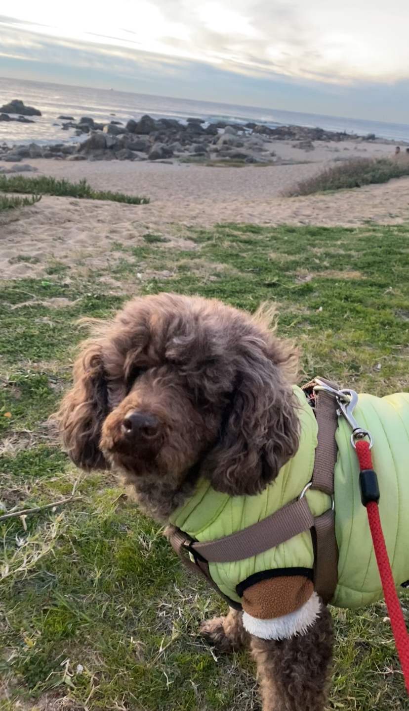
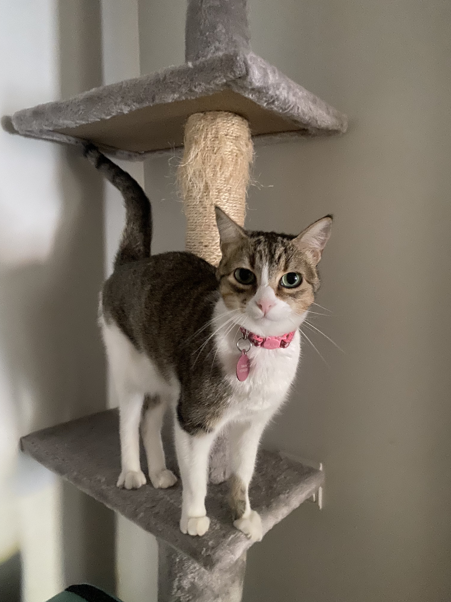

Sobre mim
Olá! Sou a Giuliana! Ao longo dos últimos anos, construí uma forte experiência prática e profissional ao atender vários clientes e os seus animais de estimação. Esta vivência contínua com diferentes perfis de animais permite-me compreender a fundo o comportamento e as necessidades de cães, gatos e outros pets, garantindo um cuidado seguro e especializado.
Tenho disponibilidade principalmente durante as tardes e noites (por conta do meu curso), para oferecer a si tranquilidade e ao seu animal toda a dedicação que ele merece :)

Meus Serviços
Dog Walking
Passeios divertidos e seguros para seu cão gastar energia e socializar.
- Passeios individuais focados nas necessidades de cada cão
- Duração flexível (30 a 60 min)
- Foco em exercício e estímulo mental
- Relatórios com fotos e vídeos
Pet Sitting
Cuido do seu pet no conforto do seu lar, mantendo a rotina e o bem-estar dele.
- Alimentação e água fresca
- Brincadeiras e muito carinho
- Limpeza do ambiente
- Administração de medicamentos
Experiências






Avaliações de Clientes
atrumgeost
"Giuliana was very patient, kind, and most importantly, kept our cats happy. 100% recommended!"
Ivana
"Não podia estar mais agradecida pelo excelente cuidado que a Giuliana deu aos meus 2 gatos durante os 24 dias em que estive fora. Foi fantástica e tratou deles como se fossem seus, garantindo que estivessem felizes, saudáveis e confortáveis. Dá para perceber que adora gatos, porque os meus gatos estavam super tranquilos e bem tratados quando voltei. Além disso, manteve-me sempre atualizada, o que me deu muita tranquilidade. Recomendo 100% a Giuliana e família a quem precisar de alguém de confiança para cuidar dos seus gatos, será a nossa primeira escolha quando voltarmos a precisar. Muito obrigada por tudo—foi incrível!"
tkpookie74
"Just amazing. Anybody is lucky to have Giuliana sit for their babies. The two babies absolutely adored her she communicated wonderfully, took care of both the babies and our home, and we hope she made our home her home. We can’t wait until she gets to come and spend time with the fur babies again."
MAGGIE
"Giuliana is a kind hearted lady with strong responsibility of taking care of my dog. No hesitation in recommending her to other dog owners."
Aurelie
"Giuliana is perfect, couldn't except better!"
Vanessa
"Kayde é uma salsichinha de quase 9 anos que está aprendendo a socializar com outras pessoas e animais. Chegou do Brasil em outubro do ano passado e está adorando a nova experiência. Certeza que está curtindo o passeio com a Giu que tem toda atenção e cautela com ela que é um pouco desconfiada. Super indico o trabalho dela, da pra ver que ama animais. Obrigada Giu"
Andréa
"A Kikas e o Gunkie adoraram o passeio! 🥰 obrigada de novo 😊"
Dominika
"I recently moved to Porto and was nervous about finding the right person to walk my senior dog. I highly recommend Giuliana to anyone looking for a reliable and caring pet walker. She’s punctual and friendly, sends pictures and updates from every walk. Thanks to her I can spend a whole day out knowing that my dog is in good hands!"
omarsiegmund
"Very sweet and trustworthy. We’re happy we picked Giuliana to watch our cats. We appreciated her messaging us and taking pictures, it made us feel at ease while we we’re away for the weekend."
Cheryl
"Giuliana was amazing to my cat Jax! It was my first time getting him a pet sitter and she made me feel really at ease while I was away. She is super sweet and reliable, sent updates and photos everytime she visited. I would highly recommend her to anyone and will be reaching out again if I need the services next time I’m in Porto! Xx"
Tyanna
"Giuliana was amazing with Ebony and very kind to her! She made sure she got her zoomies out and cuddled with her. I will definitely book with her again!"
Ana
"A Giuliana foi até à nossa casa durante 4 dias para cuidar do nosso Mingo e foi 5 estrelas, passeou com ele todos os dias, tal como solicitado e ainda limpou as asneiras que o Mingo fez em casa 😅enviou todos os dias atualizações de como ele estava, é bastante simpática e recomendo os serviços. Mais uma vez, muito obrigada Giuliana por cuidares do nosso Mingo ☺️"
Bandsman1
"Giulianna did a superb job in looking after my two dogs while I was away. They loved being with her on their walks. I will be using Giulianna in the future."
Ana
"Pela segunda vez a Giuliana aceitou cuidar do nosso Mingo, e mais uma vez correu tudo super bem. Todos os dias recebia feedback de como correu a visita, juntamente com fotografias e vídeos. Quero ressaltar o cuidado que ela teve, porque o Mingo puxa bastante a trela ao passear, e a Giuliana utilizou uma técnica diferente com o peitoral, de forma a que ele não puxasse tanto e aproveitasse melhor o passeio!! Recomendo os serviços da Giuliana, sem dúvida alguma!!"
Preços Base
Os valores apresentados são referências iniciais. O orçamento final é sempre personalizado consoante a distância, número de animais e necessidades específicas do seu pet!
| Serviço | Preço base |
|---|---|
| Dog Walking | A partir de 8€ / passeio |
| Pet Sitting (Visitas ao domicílio) | A partir de 12€ / visita |
Taxas adicionais podem aplicar-se a fins de semana e feriados.
Ainda com dúvidas?
Reserve através da plataforma PetBacker para obter proteção premium e garantia de pagamento seguro até o serviço estar completo.
Reservar pelo PetBacker